Sauvegarder la configuration de Veeam et le serveur de fichiers¶
Résumé
Ce TP met en route les premières sauvegardes réelles du lab. Il commence par protéger Veeam lui-même : la sauvegarde de configuration (la « carte d'identité » du serveur de sauvegarde), chiffrée et envoyée sur le dépôt du serveur de fichiers. Il continue avec la sauvegarde d'un dossier de documents importants du serveur Windows srv-fichiers : création d'un groupe de protection, déploiement automatique de l'agent Veeam pour Windows, création du job en mode fichiers, premier lancement.
Il se termine par ce que beaucoup oublient : un test de restauration. Un fichier est supprimé volontairement, puis récupéré depuis la sauvegarde, et son empreinte SHA-256 prouve qu'il est identique à l'original.
| Propriété | Valeur |
|---|---|
| Difficulté | Intermédiaire |
| Durée estimée | 2 h 30 (dont environ 10 minutes d'attente des traitements) |
| Version décrite | Veeam Backup & Replication 13.1.2.57 (Veeam Software Appliance), agent Veeam pour Windows installé par l'appliance |
| Prérequis | Parties 3 et 4 terminées ; instantané 02-depots |
| Place dans le parcours | Partie 5 sur 7 du parcours Veeam Backup & Replication |
| Dernière mise à jour | 2026-11-02 |
Convention de lecture
Chaque action précise la machine sur laquelle elle se fait : 🖥️ PC hôte (hyperviseur), 🌐 navigateur web connecté à l'appliance, 🪟 srv-fichiers (Windows Server 2025), 📦 console de l'appliance vbr. Les menus et boutons sont écrits en anglais, comme Veeam les affiche, et traduits quand c'est utile. Les adresses, comptes et mots de passe sont ceux de la page d'accueil du parcours ; pour mémoire :
| Élément | Valeur |
|---|---|
| Interface web et console Windows | https://192.168.19.55, compte veeamadmin, mot de passe PoPoPo000@@@Lab + code MFA |
srv-fichiers |
192.168.19.22, compte Administrateur, mot de passe Popopo222@@@ |
| Mot de passe de chiffrement de la sauvegarde de configuration | Popopo444@@@ (indice « Mot de passe du lab Veeam ») |
| Phrase secrète du Security Officer (partie 3) | PoPoPo666@@@Lab (indice « Phrase secrete du lab Veeam ») |
Objectifs¶
À la fin de ce TP, il est possible de :
- expliquer ce que contient une sauvegarde de configuration et pourquoi elle ne doit jamais rester sur le serveur qu'elle protège ;
- régler, chiffrer et lancer la sauvegarde de configuration depuis la console Windows ;
- créer un groupe de protection et laisser l'appliance déployer l'agent sur un serveur Windows ;
- créer un job de sauvegarde par agent en mode fichiers, le lancer et lire son résultat ;
- restaurer un fichier supprimé et prouver, par son empreinte, que la restauration est fidèle.
Prérequis¶
- Les parties 3 et 4 sont terminées : l'appliance
vbrfonctionne,srv-fichiersest un serveur géré et possède le dépôtDepot-2-srv-fichiers(disqueF:, cheminF:\RepoVeeam). - La console Windows de Veeam est installée sur
srv-fichiers(fin de la partie 3). - Le Security Officer de l'appliance a été initialisé, avec sa phrase secrète de sauvegarde de configuration (section « Initialiser le compte Security Officer » de la partie 3).
- Machines allumées :
pfsense-19,vbr,srv-fichiers.srv-debiann'est pas encore utile. - Le dossier
E:\Documents-importantsexiste sursrv-fichiers(voir l'encadré ci-dessous). - Instantané conseillé :
02-depots, pris à la fin de la partie 4. Il permet de recommencer cette partie sans refaire les précédentes (voir Instantanés conseillés).
Préparer le dossier de documents à protéger (si absent)
Sur srv-fichiers, le disque E: (40 Go, NTFS, nommé « DONNEES ») doit contenir quelques documents fictifs. Dans PowerShell ouvert en administrateur :
$base = 'E:\Documents-importants'
foreach ($s in 'Comptabilite','Contrats','Ressources-humaines') {
New-Item -ItemType Directory -Force -Path "$base\$s" | Out-Null
}
Set-Content "$base\Comptabilite\factures-2026.csv" "Numero;Client;Montant`nF2026-001;Boulangerie Martin;1250,00`nF2026-002;Garage Durand;3480,50`nF2026-003;Cabinet Leroy;890,00" -Encoding UTF8
Set-Content "$base\Comptabilite\bilan-previsionnel.txt" "Bilan previsionnel 2026 - document confidentiel" -Encoding UTF8
Set-Content "$base\Contrats\contrat-maintenance-2026.txt" "Contrat de maintenance informatique - signe le 05/01/2026" -Encoding UTF8
Le fichier de la section 5 est factures-2026.csv. Peu importe le contenu des autres fichiers.
1. Comprendre ce qu'il faut protéger¶
Un serveur de sauvegarde Veeam protège les données des autres machines. Mais il a lui-même besoin d'être protégé : s'il disparaît, il faut pouvoir le reconstruire sans tout reconfigurer.
1.1 Qu'est-ce qu'une sauvegarde de configuration ?¶
Veeam enregistre sa configuration dans une base de données (PostgreSQL sur l'appliance) : la liste des dépôts, des serveurs gérés, des jobs, des groupes de protection, les identifiants enregistrés, les historiques de sessions et le catalogue des points de restauration. La sauvegarde de configuration (configuration backup) en fait une copie, dans un fichier au format .bco.
| Contenu | Dans la sauvegarde de configuration ? |
|---|---|
| Jobs, planifications, dépôts, serveurs gérés, groupes de protection | Oui |
| Historique des sessions, catalogue des points de restauration | Oui |
| Identifiants, certificats, clés de chiffrement | Seulement si la sauvegarde est chiffrée |
| Les données sauvegardées (fichiers, images de machines) | Non : elles restent dans les dépôts |
Pourquoi est-ce vital ?
Sans configuration, un nouveau serveur Veeam, même branché sur les bons dépôts, ne connaît ni les jobs ni les mots de passe : il faut tout recréer à la main et retrouver le mot de passe de chaque sauvegarde chiffrée pour pouvoir la relire. Avec elle, il suffit de réinstaller l'appliance puis de restaurer la configuration : en quelques minutes, jobs, dépôts et historique reviennent. C'est l'équivalent de la carte grise et du carnet d'entretien d'une voiture : ils ne remplacent pas la voiture, mais sans eux, la remplacer est un cauchemar.
1.2 Où la stocker ?¶
Par défaut, Veeam propose le dépôt Default Backup Repository, qui se trouve sur l'appliance elle-même (/var/lib/veeam/backup). C'est une mauvaise idée : si l'appliance est détruite ou chiffrée par un rançongiciel, la sauvegarde de sa configuration disparaît avec elle. C'est exactement la situation contre laquelle elle doit protéger.
Ce TP envoie donc la sauvegarde de configuration vers Depot-2-srv-fichiers, un dépôt situé sur une autre machine (srv-fichiers, disque F:). En production, on la copierait en plus hors site (autre bâtiment, cloud, dépôt immuable) : la règle 3-2-1-1-0 s'applique aussi à la configuration de Veeam.
1.3 Une double protection : mot de passe et phrase secrète¶
Sur une appliance avec un compte Security Officer, la sauvegarde de configuration est protégée par deux secrets :
| Secret | Qui le définit, où | Rôle |
|---|---|---|
| Mot de passe de chiffrement | Le gestionnaire de sauvegarde, dans la console Windows (section 2.3) | Chiffre le fichier .bco ; il faut le fournir pour restaurer |
| Phrase secrète (passphrase) | Le Security Officer, dans Host Management (partie 3) | Ajoute un second chiffrement : un administrateur seul ne peut plus restaurer ni lire la configuration |
L'idée est la séparation des pouvoirs : celui qui administre Veeam au quotidien ne détient pas, à lui seul, tout ce qu'il faut pour exploiter une sauvegarde de configuration volée. D'après la documentation de Veeam, si cette protection est active, la tâche de sauvegarde de configuration échoue tant que le chiffrement n'est pas activé.
Conserver ces secrets hors de l'appliance
Le mot de passe et la phrase secrète ne se récupèrent pas : sans eux, le fichier .bco est inutilisable, et l'assistance technique de Veeam ne peut pas les retrouver (la console le rappelle à l'écran). Les noter dans un gestionnaire de mots de passe ou un coffre qui ne dépend pas de l'appliance. Les stocker sur le serveur de sauvegarde lui-même reviendrait à ranger la clé du coffre dans le coffre. Dans ce lab pédagogique, les valeurs sont publiées en clair dans la page d'accueil du parcours : ce n'est acceptable que parce que le lab ne contient aucune donnée réelle.
2. Sauvegarder la configuration de Veeam¶
Console Windows ou interface web ?
Ce réglage se fait dans la console Windows, comme le décrit la documentation de Veeam (menu principal, Configuration Backup). Dans la version 13.1.2, les pages Configuration de l'interface web ne le proposent pas. Si une version ultérieure l'ajoute, la logique reste la même.
2.1 Ouvrir les réglages¶
- 🪟 Sur
srv-fichiers, ouvrir la console Veeam Backup & Replication et se connecter à192.168.19.55avecveeamadmin(mot de passePoPoPo000@@@Lab+ code MFA), comme en fin de partie 3. - Cliquer sur le menu principal (l'icône ≡ en haut à gauche), puis sur Configuration Backup.
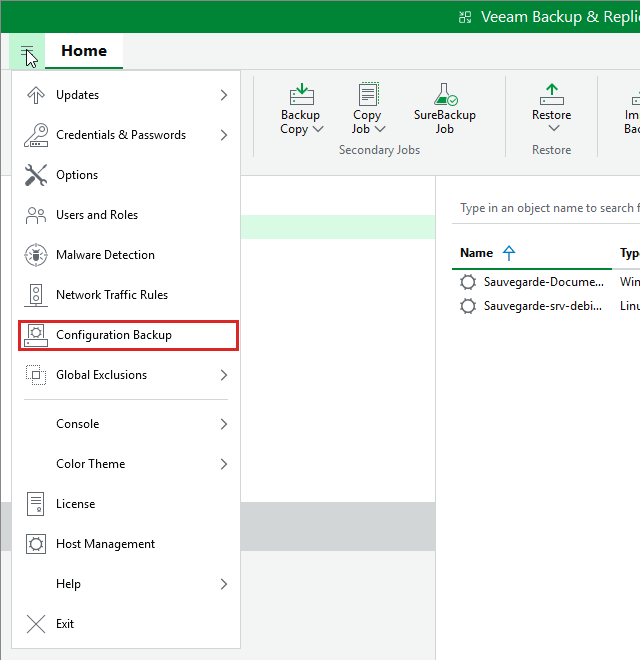
La fenêtre Configuration Backup Settings s'ouvre. Au départ, le dépôt choisi est Default Backup Repository, la rétention est de 10 points de restauration et la sauvegarde est planifiée tous les jours à 10:00. Une alerte jaune prévient que les identifiants enregistrés, les certificats et les données de l'appliance ne seront pas inclus tant que le chiffrement n'est pas activé.
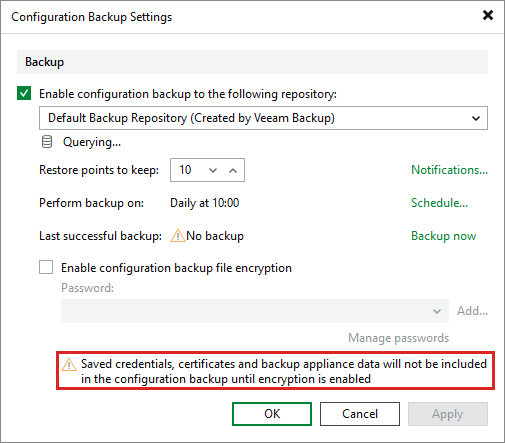
2.2 Choisir le dépôt n° 2¶
- Cocher Enable configuration backup to the following repository si ce n'est pas fait.
- Dans la liste Backup repository située sous cette case, remplacer
Default Backup RepositoryparDepot-2-srv-fichiers(« Dépôt n° 2 : disque F: (ReFS 64 Ko) du serveur de fichiers srv-fichiers »). - Laisser Restore points to keep à 10 : Veeam conserve les 10 dernières sauvegardes de configuration et supprime les plus anciennes.
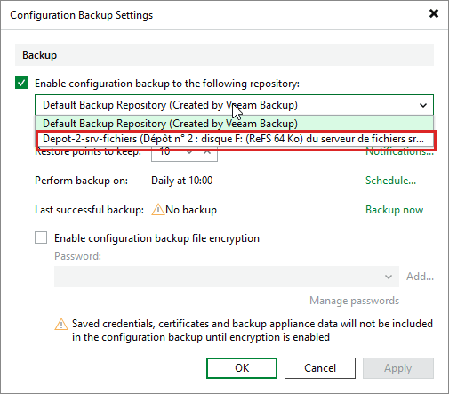
srv-fichiers, et non celui de l'appliance.Pourquoi 10 points de restauration et une sauvegarde quotidienne ?
La configuration change à chaque nouveau job ou dépôt. Une sauvegarde quotidienne garde au pire une journée de modifications à refaire ; 10 points permettent de remonter jusqu'à 10 jours en arrière si une erreur de configuration passe inaperçue. Le fichier est petit (environ 227 Ko dans le lab) : conserver davantage de points coûte très peu.
2.3 Activer le chiffrement¶
- Cocher Enable configuration backup file encryption.
- Cliquer sur Add... à droite du champ Password.
- Dans la fenêtre Password, saisir :
- Hint (indice) :
Mot de passe du lab Veeam; - Password :
Popopo444@@@.
- Hint (indice) :
- Cliquer sur OK.
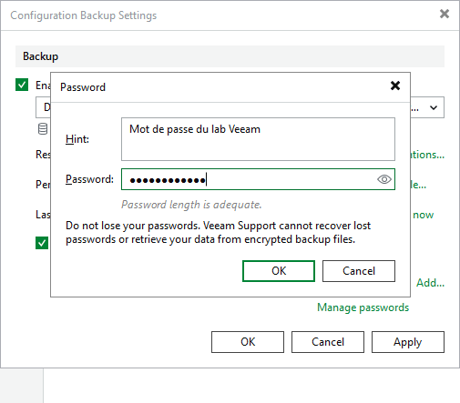
Écrire l'indice avec soin
Un indice trop vague (« le mot de passe habituel ») est inutile le jour de la reconstruction. Un indice trop précis (« nom du chien + année ») aide un attaquant. Le bon indice permet de retrouver dans le gestionnaire de mots de passe la bonne entrée.
2.4 Lancer la sauvegarde (Backup now)¶
- Cliquer sur Apply pour enregistrer les réglages. Veeam interroge le dépôt et affiche son espace libre (dans le lab :
38,6 GB free of 39,9 GB). - Cliquer sur Backup now à droite de Last successful backup.
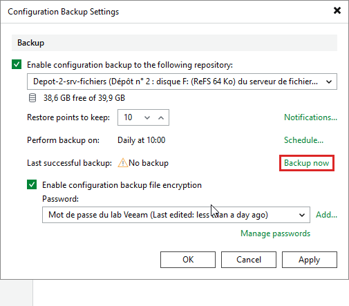
Au bout d'une minute environ, la ligne Last successful backup affiche la date et l'heure de la sauvegarde. Cliquer sur OK pour fermer la fenêtre.
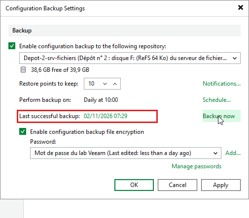
2.5 Dépanner : la phrase secrète du Security Officer manque¶
La tâche « Backup Configuration Job » échoue
Si Backup now se termine en Failed, ouvrir le journal de la session. Si la phrase secrète n'a pas encore été définie, il contient :
Failed Processing configuration VeeamBackup at /run/postgresql
Failed Unable to process the configuration backup without the Security Officer's passphrase.
Ask your Security Officer to configure it in the Host Management console.
Cause : sur une appliance, la sauvegarde de configuration est protégée par la phrase secrète du Security Officer. Si elle n'a pas été définie lors de la première connexion du Security Officer (partie 3), la sauvegarde ne peut pas être produite.
Correction :
- 🌐 Ouvrir Host Management de l'appliance et se connecter avec le compte du Security Officer
veeamso(mot de passePoPoPo555@@@Lab+ code MFA, voir la partie 3). - Si l'assistant d'initialisation s'affiche, le terminer jusqu'à l'étape Configuration Backup. Saisir la Passphrase
PoPoPo666@@@Labet l'indicePhrase secrete du lab Veeam. - Vérifier, dans Configuration, la ligne Passphrase created (voir la capture ci-dessous).
- 🪟 Retourner dans la console Windows et cliquer de nouveau sur Backup now.
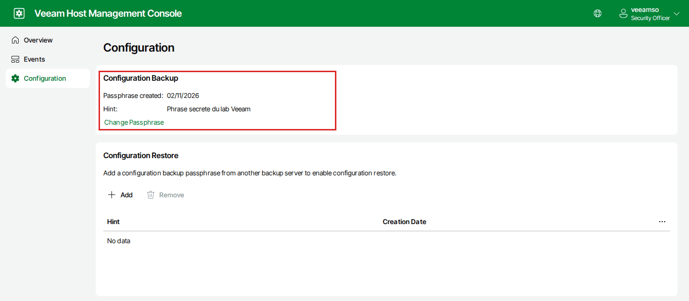
2.6 Vérifier le fichier de sauvegarde¶
Vérifier que le fichier existe bien sur le dépôt n° 2, donc sur une autre machine que l'appliance.
-
🪟 Sur
srv-fichiers, ouvrir PowerShell et lancer : -
Un fichier
.bcoapparaît, dans un sous-dossier portant le nom du serveur de sauvegarde. Dans le lab :
Le nom contient la date et l'heure de la sauvegarde ; la taille (environ 227 Ko) est faible puisqu'il ne contient que la configuration, pas les données.
Et la restauration de la configuration ?
Ce TP crée la sauvegarde de configuration mais ne la restaure pas : une restauration remplace la configuration du serveur de sauvegarde en cours, ce qui n'a pas sa place ici. Elle se fait avec l'assistant Restore de la console Windows, en fournissant le mot de passe de chiffrement et la phrase secrète du Security Officer. Retenir surtout ceci : sans ces deux secrets, la sauvegarde est inutilisable.
3. Créer le groupe de protection de srv-fichiers¶
3.1 Pourquoi un groupe de protection ?¶
Pour sauvegarder un serveur physique ou une machine virtuelle sans passer par l'hyperviseur, Veeam installe un petit logiciel sur la machine : l'agent Veeam pour Windows. Les groupes de protection (protection groups) permettent de le faire de façon automatisée :
- un groupe regroupe les machines à protéger (ici, une seule) ;
- l'appliance découvre les machines du groupe, installe l'agent et le tient à jour ;
- le groupe est réanalysé (rescan) chaque jour : une machine ajoutée plus tard au groupe est détectée et équipée toute seule.
Pourquoi l'agent et pas une simple copie de fichiers ?
Copier un dossier avec l'Explorateur ne garde ni l'historique, ni la déduplication, ni la compression, ni le chiffrement, et bloque sur les fichiers ouverts. L'agent s'appuie sur le service d'instantanés de volume de Windows (VSS) pour lire un état cohérent même si des fichiers sont ouverts, puis envoie les blocs modifiés au dépôt.
3.2 Créer le groupe¶
- 🌐 Ouvrir
https://192.168.19.55dans le navigateur et se connecter (veeamadmin,PoPoPo000@@@Lab+ code MFA). - Dans le menu de gauche, ouvrir Inventory > Protection Groups, puis cliquer sur Add New.
- Choisir Individual Computers : un groupe où l'on liste les machines une par une, adapté aux petits parcs sans annuaire. L'autre choix, Microsoft Active Directory Objects, suit dynamiquement des unités d'organisation d'un domaine Active Directory ; ce lab est en groupe de travail.
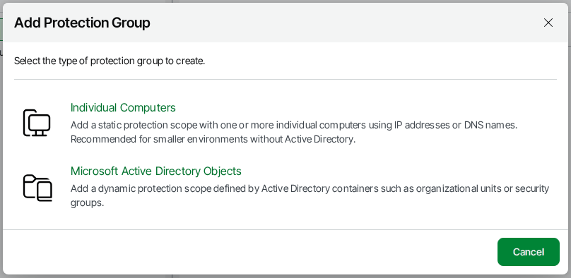
- À l'étape Name, saisir :
- Name :
GP-srv-fichiers - Description :
Groupe de protection du serveur de fichiers Windows (agent Veeam)
- Name :
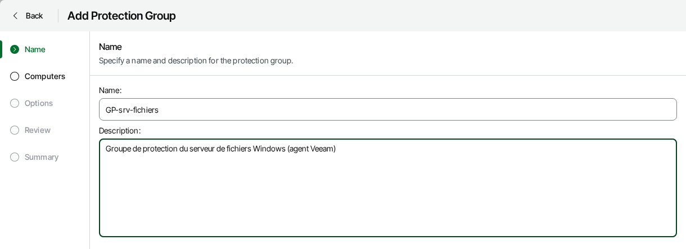
- Cliquer sur Next, puis sur Add pour ajouter un ordinateur.
- Saisir
192.168.19.22dans Hostname or IP address, puis choisir Connect using certificate-based authentication (« se connecter par certificat »), et cliquer sur OK.
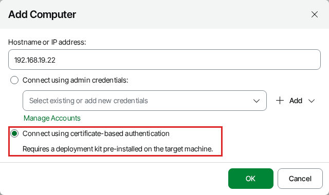
Pourquoi l'authentification par certificat ?
La seconde option, Connect using admin credentials, demande un compte administrateur de la machine. Le choix par certificat évite de saisir un mot de passe, et l'ordinateur est déjà connu de l'appliance : srv-fichiers a été ajouté comme serveur géré en partie 4, ce qui a installé le Veeam Deployment Service (le service VeeamDeploySvc tourne sur le serveur). La colonne Account de la liste indique d'ailleurs « Veeam Deployment Service ». Si la machine n'avait pas ce service, il faudrait passer par le compte administrateur (Administrateur, Popopo222@@@).
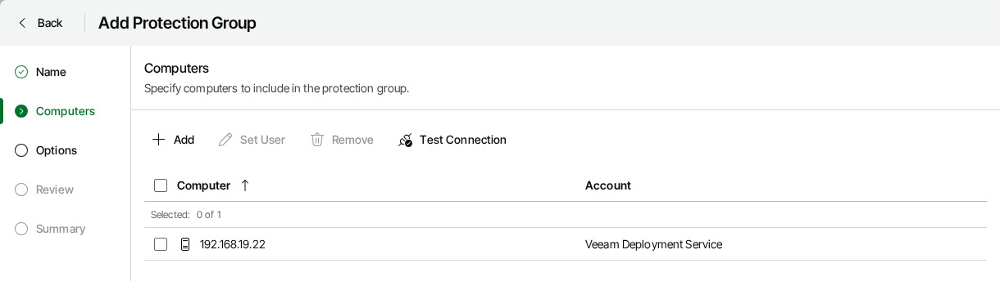
-
Cliquer sur Next. À l'étape Options, garder les valeurs par défaut :
Option Valeur Signification Rescan protection group Chaque jour à 21:00 Quand l'appliance revérifie le groupe Distribution server vbrLe serveur qui fournit le logiciel de l'agent Install backup agent Coché Installe l'agent sur la machine Install changed block tracking driver Décoché Pilote optionnel qui suit les blocs modifiés (utile pour les sauvegardes de volumes) Install nosnap backup agent Décoché Pour Linux uniquement Auto-update backup agents Coché Met l'agent à jour automatiquement Reboot automatically if required Décoché Évite un redémarrage inattendu d'un serveur en production
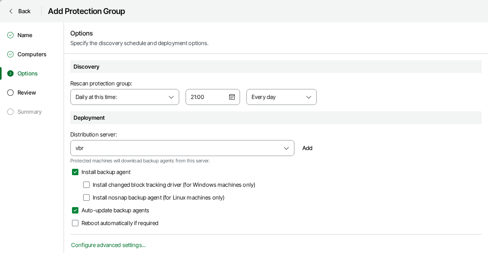
vbr et mis à jour automatiquement.- Cliquer sur Next : l'étape Review annonce que le composant Veeam Distribution Service « sera installé » sur la machine. Cliquer encore sur Next.
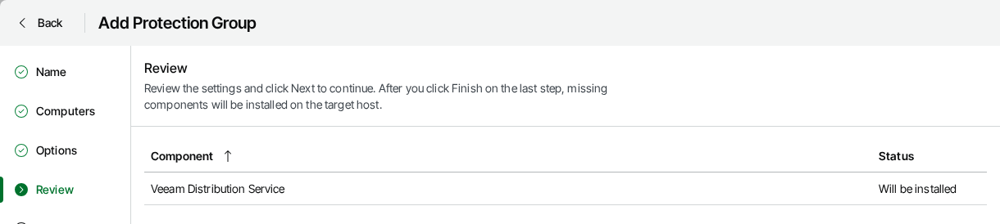
- À l'étape Summary, laisser coché Run discovery when I click Finish (« lancer la découverte à la fin »), puis cliquer sur Finish.
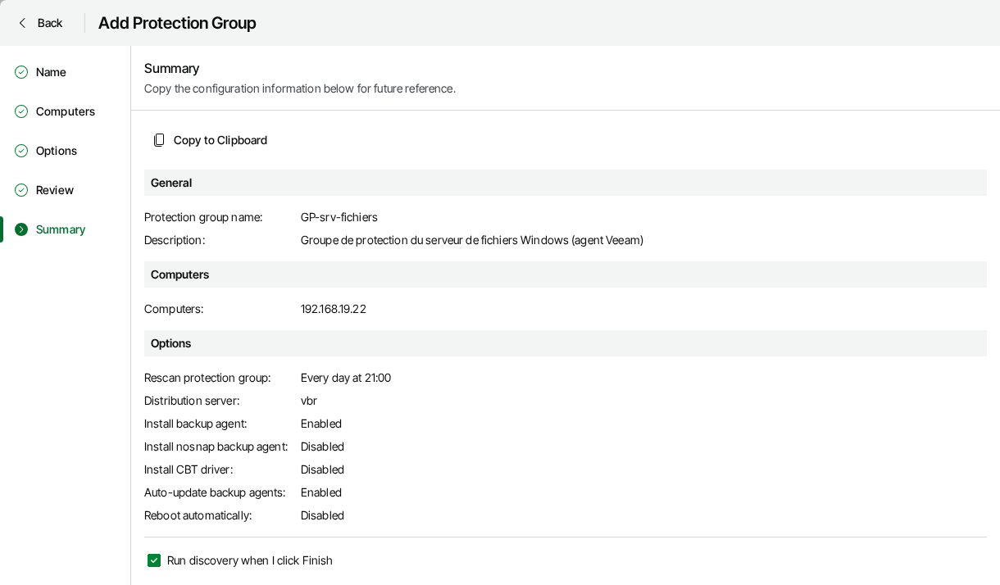
3.3 Suivre le déploiement de l'agent¶
Une fenêtre Machine Rescan s'ouvre. Veeam se connecte à srv-fichiers, installe l'agent et ses composants. Compter environ 2 minutes (dans le lab : 1 min 39). Attendre l'état Success puis cliquer sur Close.
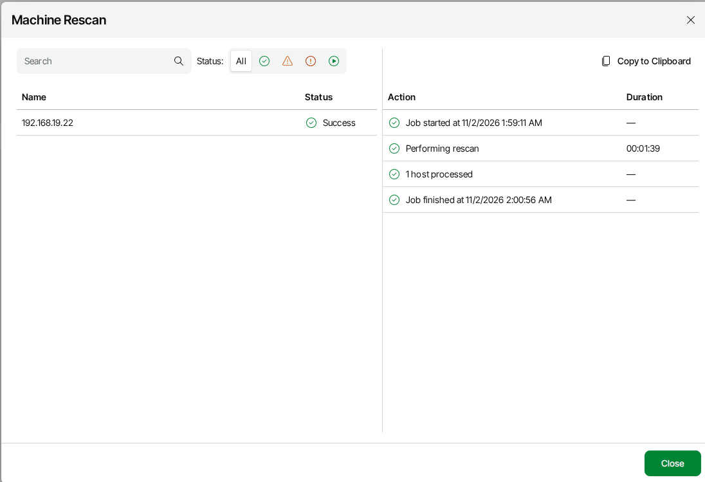
Dans la liste Protection Groups > GP-srv-fichiers, la machine SRV-FICHIERS apparaît avec son système (Microsoft Windows Server 2025), son adresse 192.168.19.22 et la colonne Backup Agent Status à Installed.
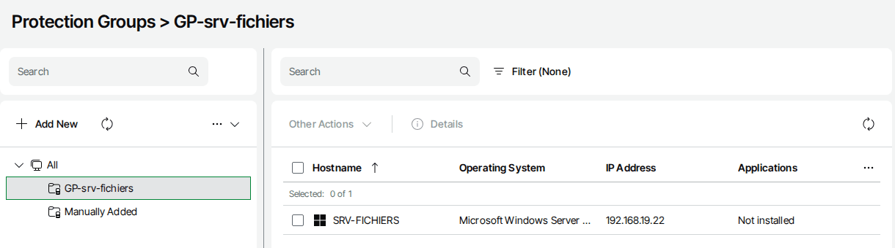
Vérifier que l'agent est bien installé et démarré sur le serveur :
# 🪟 srv-fichiers, PowerShell
Get-Service | Where-Object DisplayName -match 'Veeam' | Format-Table Name, DisplayName, Status -AutoSize
Le résultat doit inclure le service Veeam Agent for Microsoft Windows (VeeamEndpointBackupSvc) à l'état Running, à côté du service d'installation VeeamDeploySvc et de services d'aide à la restauration (VeeamExplorersRecoverySvc, VeeamMountSvc, VeeamTransportSvc…), tous normalement à l'état Running.
Le rescan se termine en erreur
Avant d'incriminer Veeam, vérifier dans l'ordre : l'adresse saisie (192.168.19.22), la communication réseau entre vbr et srv-fichiers (un ping depuis la VM), le pare-feu Windows, et que le service VeeamDeploySvc tourne sur srv-fichiers. Ouvrir le détail de la session depuis Logs & Events pour lire le message complet.
4. Créer le job de sauvegarde du dossier¶
Le job indique quoi sauvegarder, où, quand et combien de temps conserver les données.
4.1 Lancer l'assistant¶
- 🌐 Dans le menu de gauche, ouvrir Home > Jobs.
- Cliquer sur New Job, puis choisir Agent Backup Job.
- Choisir le mode Server job.
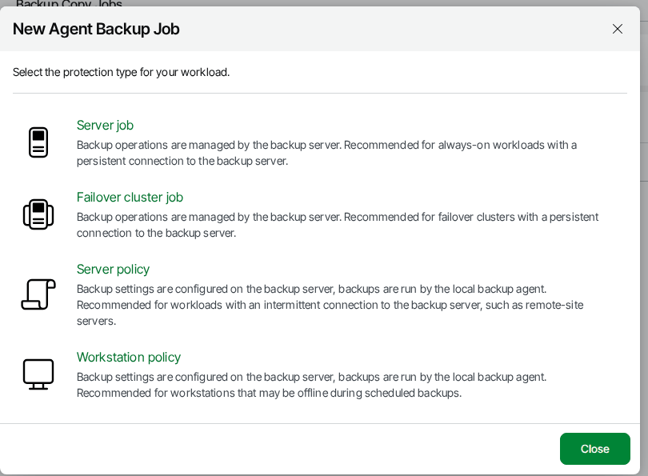
Server job ou Server policy ?
Dans un Server job, c'est le serveur de sauvegarde qui commande l'agent : il convient aux serveurs toujours allumés et joignables, comme srv-fichiers. Une policy donne à l'agent ses réglages : l'agent sauvegarde ensuite seul, même si le serveur est injoignable. C'est le bon choix pour des postes ou des portables nomades. Le Failover cluster job protège un cluster Windows : hors du sujet ici.
- À l'étape Name, saisir :
- Name :
Sauvegarde-Documents-importants-srv-fichiers - Description :
Sauvegarde au niveau fichiers du dossier E:\Documents-importants de srv-fichiers
- Name :
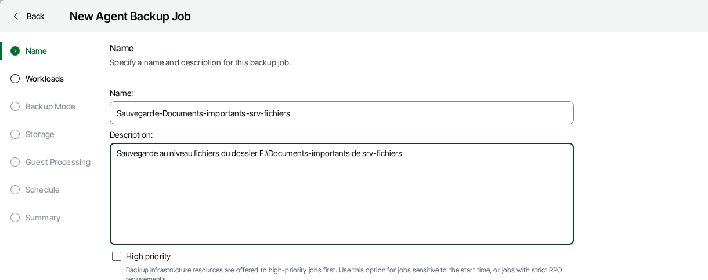
- À l'étape Workloads, cliquer sur Add, cocher le groupe
GP-srv-fichierspuis valider. Le groupe apparaît avec le type Physical infrastructure.
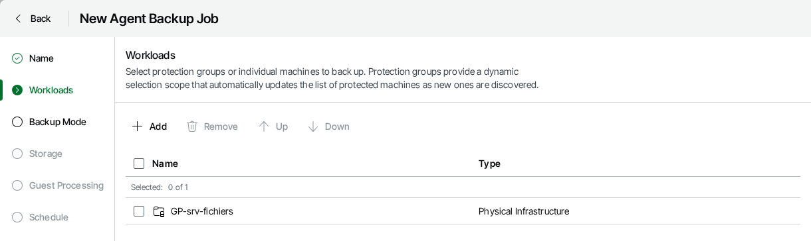
4.2 Choisir le mode de sauvegarde¶
À l'étape Backup Mode, trois choix s'offrent :
| Mode | Ce qu'il sauvegarde | Quand le choisir |
|---|---|---|
| Entire machine backup | L'image complète de la machine (système et données) | Pour reconstruire la machine entière (c'est le mode du serveur Linux de la partie 6) |
| Volume-level backup | Les volumes choisis, par exemple le seul disque de données | Pour protéger un disque entier sans le système |
| File-level backup (slower) | Uniquement les fichiers et dossiers choisis | Pour un dossier précis, comme ici |
Sélectionner File-level backup (slower), puis Next.
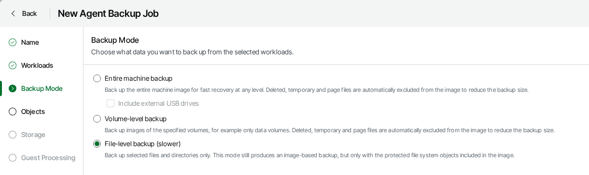
Un mode fichiers ne permet pas de reconstruire la machine
Avec ce mode, on retrouve les fichiers, pas le système Windows. Ce n'est pas un problème ici, car les documents sont l'objet de la protection. Pour protéger le serveur entier, utiliser Entire machine backup.
4.3 Désigner le dossier à sauvegarder¶
À l'étape Objects, trois cases sont proposées : Operating system, Personal files et The following file system objects. Les deux premières sont décochées.
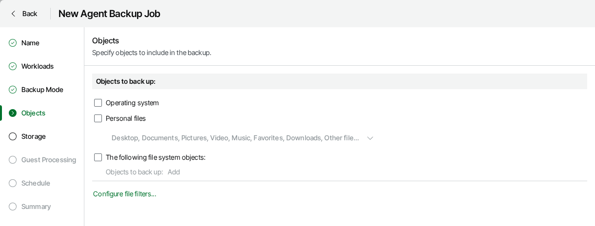
- Cocher The following file system objects.
- Cliquer sur Add à côté de Objects to back up, saisir
E:\Documents-importants, puis valider avec Add. - Cliquer sur Next.
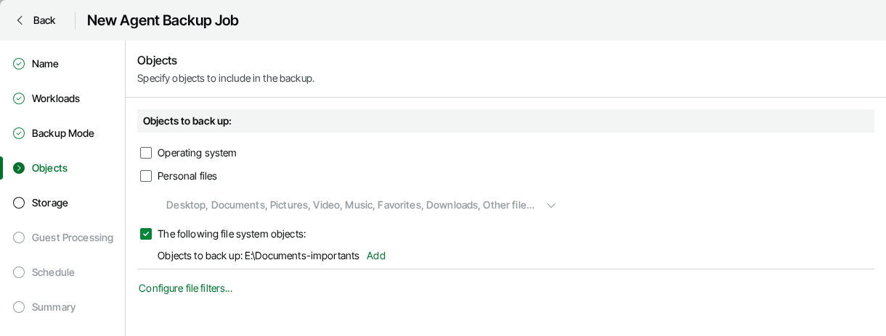
E:\Documents-importants est dans la liste : tout son contenu, sous-dossiers compris, sera sauvegardé.4.4 Choisir le dépôt et la rétention¶
À l'étape Storage :
- Cliquer sur Select et choisir
Default Backup Repository(l'appliance), pasDepot-2-srv-fichiers.
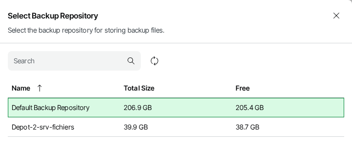
Pourquoi le dépôt de l'appliance, et pas celui de srv-fichiers ?
Les documents à protéger sont sur srv-fichiers. Les sauvegarder sur F: du même serveur laisserait les données et leur copie sur la même machine : un incendie, un vol ou un rançongiciel emporterait les deux. En les envoyant sur l'appliance, les données se trouvent sur deux machines différentes. De plus, ce dépôt est immuable (7 jours dans ce lab, voir la partie 4) : même un attaquant qui contrôle Veeam ne peut pas supprimer les fichiers de sauvegarde pendant cette durée. À l'inverse, le dépôt n° 2 reçoit la sauvegarde de configuration de Veeam, pour la raison inverse : celle-ci doit se trouver hors de l'appliance.
- Laisser Retention policy à 7 days.
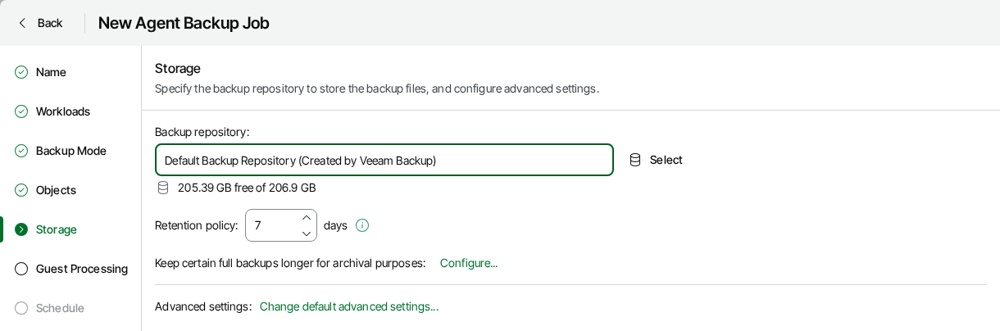
Que signifie une rétention de 7 jours ?
Veeam conserve les points de restauration des 7 derniers jours et supprime les plus anciens. Chaque sauvegarde étant planifiée une fois par jour, cela revient à pouvoir remonter une semaine en arrière. Cette durée est alignée sur celle de l'immuabilité du dépôt (7 jours) : un point plus ancien que 7 jours peut être supprimé, un point plus récent est verrouillé. Dans un vrai projet, la rétention découle des besoins métier et réglementaires (30 jours, 12 mois…). Le lien Configure… (Keep certain full backups longer for archival purposes) permet d'ajouter des sauvegardes complètes à long terme.
- Ne pas toucher à Advanced settings et cliquer sur Next.
4.5 Traitement invité et planification¶
À l'étape Guest Processing, laisser les valeurs par défaut :
- Enable application-aware processing : activé. Veeam détecte les applications (bases de données par exemple) et prépare une sauvegarde cohérente. Sans effet gênant ici :
srv-fichiersn'héberge pas d'application particulière. - Enable guest file system indexing and malware detection : désactivé. L'indexation permettrait une recherche globale de fichiers et la détection d'activités suspectes, mais elle ralentit le traitement.
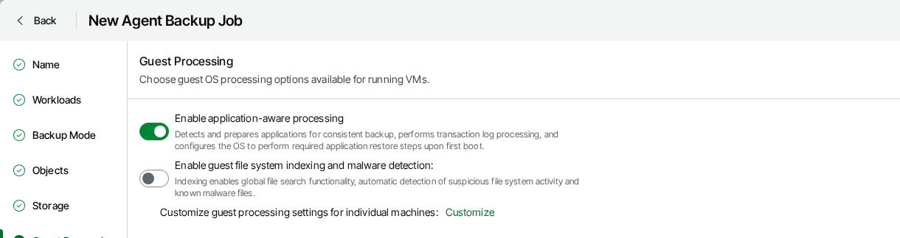
À l'étape Schedule, laisser :
- Run job on schedule activé, Daily at this time
22:00, Every day : le job tourne chaque soir à 22 h, quand les utilisateurs ont quitté leurs postes ; - Enable automatic retries activé : en cas d'échec, trois nouvelles tentatives (3 times), à 10 minutes d'intervalle ;
- Backup window désactivé : aucune heure limite pour terminer.
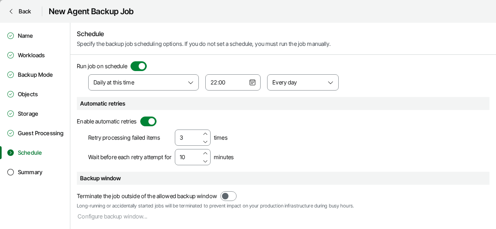
Pourquoi choisir la nuit ?
Une sauvegarde lit beaucoup de données et sollicite le disque et le réseau. La lancer en dehors des heures de travail évite de ralentir les utilisateurs. Elle fixe aussi le RPO (voir la partie 1) : avec une sauvegarde quotidienne, on accepte de perdre au pire 24 heures de données.
4.6 Résumé et premier lancement¶
À l'étape Summary, relire les réglages : mode Server, type Agent backup job, mode File-level backup (slower), dépôt /var/lib/veeam/backup, périmètre GP-srv-fichiers (Agent). Veeam affiche aussi la commande PowerShell qui lance le job.
- Laisser cochée la case Run the job after I click Finish : le job démarre tout de suite, sans attendre 22 h.
- Cliquer sur Finish.
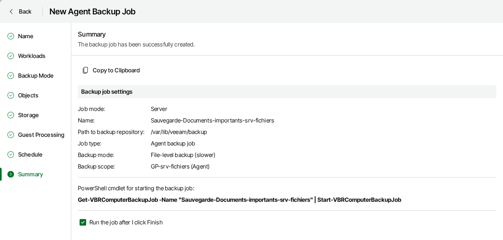
Start-VBRComputerBackupJob permet de lancer le même job par script.4.7 Lire le résultat¶
Le job apparaît dans Home > Jobs. Attendre que la colonne Last Result passe à Success. Dans le lab, le premier passage a duré 2 min 59. La prochaine exécution est annoncée dans Next Run (à 22:00).
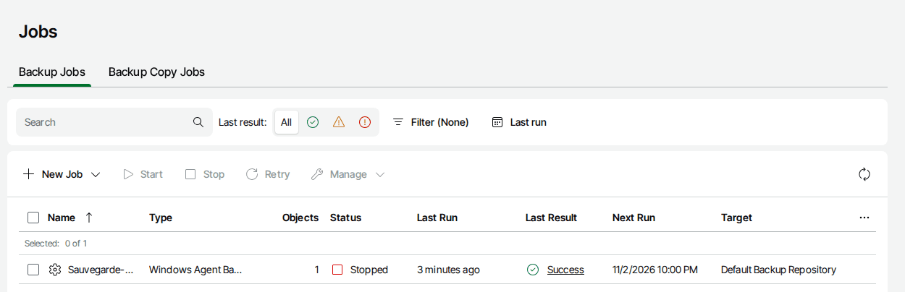
Cliquer sur Success pour ouvrir le détail de la session.
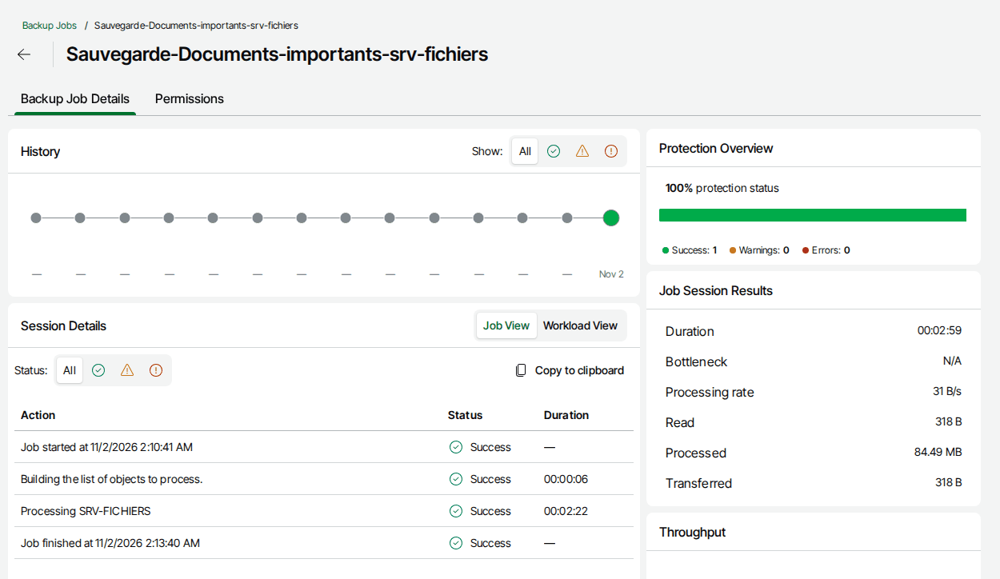
SRV-FICHIERS a duré 2 min 22).Les statistiques d'une toute petite sauvegarde
Les compteurs Read et Transferred sont très faibles (318 octets dans la capture, alors que Processed affiche 84,49 Mo) : le dossier ne contient que quelques fichiers de quelques lignes, et Veeam compresse et ne transfère que les blocs utiles. Ces valeurs n'ont rien d'anormal pour ce lab. Les durées et les volumes d'un vrai serveur seront bien supérieurs.
5. Tester la restauration d'un fichier¶
Une sauvegarde qui n'a jamais été restaurée est une promesse non vérifiée. C'est le « 0 » de la règle 3-2-1-1-0 : zéro erreur à la restauration. On simule ici l'accident le plus courant : la suppression d'un fichier par erreur.
5.1 Relever l'empreinte puis supprimer le fichier¶
L'empreinte (hash) SHA-256 est une signature calculée à partir du contenu d'un fichier : si un seul octet change, l'empreinte change complètement. Elle permet de prouver que le fichier restauré est identique à l'original.
-
🪟 Sur
srv-fichiers, ouvrir PowerShell et relever l'empreinte :Dans le lab, avec le contenu proposé plus haut :
Si le fichier a un autre contenu, l'empreinte sera différente : la noter.
-
Supprimer le fichier, puis vérifier qu'il a disparu :
Remove-Item E:\Documents-importants\Comptabilite\factures-2026.csv Get-ChildItem E:\Documents-importants\ComptabiliteIl ne reste que
bilan-previsionnel.txt.
Une suppression « normale » n'est pas annulable
Remove-Item supprime le fichier sans passer par la corbeille. Il n'existe plus que dans la sauvegarde : c'est ce que le test vérifie.
5.2 Choisir le point de restauration¶
- 🌐 Dans l'interface web, ouvrir Home > Backups.
- Déplier la ligne
Sauvegarde-Documents-importants-srv-fichierset sélectionner la machine SRV-FICHIERS.
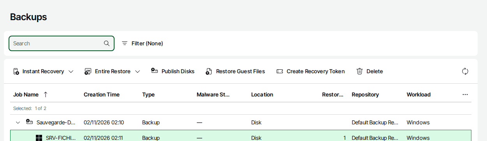
- Cliquer sur Restore Guest Files (« restaurer des fichiers invités »).
- Dans la fenêtre Select Restore Point, choisir le point de restauration (ici, un seul : latest, de type Full) puis cliquer sur Select.
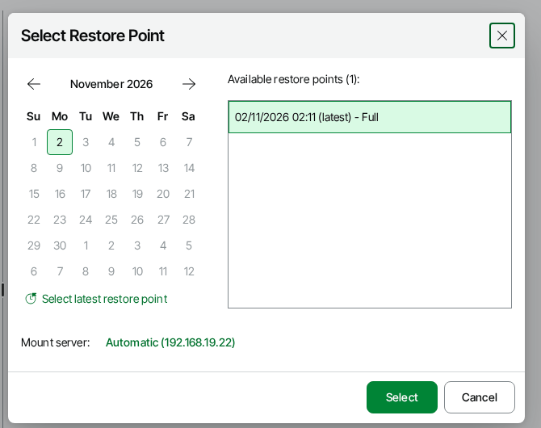
192.168.19.22.Que se passe-t-il pendant le montage ?
Veeam ne décompresse pas toute la sauvegarde. Il monte son contenu sur un serveur de montage (mount server), ici srv-fichiers lui-même, ce qui permet de parcourir les fichiers comme un disque et de n'en récupérer qu'un. L'écran affiche « Starting restore session… » quelques secondes.
Le navigateur de restauration ne s'ouvre pas ?
Le navigateur de restauration s'ouvre dans une nouvelle fenêtre. Si rien n'apparaît, le navigateur web bloque sans doute les fenêtres contextuelles (pop-ups) : cliquer sur l'icône de blocage qui s'affiche dans la barre d'adresse, autoriser les fenêtres contextuelles pour https://192.168.19.55, puis relancer Restore Guest Files.
5.3 Retrouver le fichier¶
Une fenêtre Browse - SRV-FICHIERS s'ouvre avec l'arborescence de la machine. Deux méthodes pour trouver le fichier :
- parcourir : développer
SRV-FICHIERS>E:>Documents-importants>Comptabilite; - rechercher : saisir
facturesdans la zone Search et valider par Entrée.
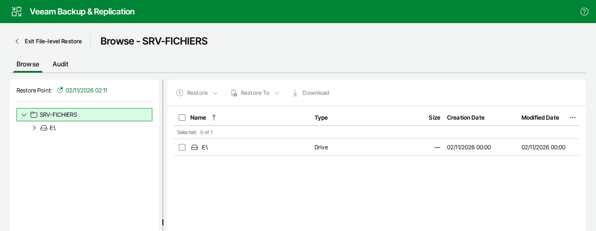
SRV-FICHIERS telle qu'elle était lors de la sauvegarde, avec son disque E:.La recherche renvoie un seul fichier : factures-2026.csv, de type File, d'une taille de 126 octets, dans E:\Documents-importants\Comptabilite.
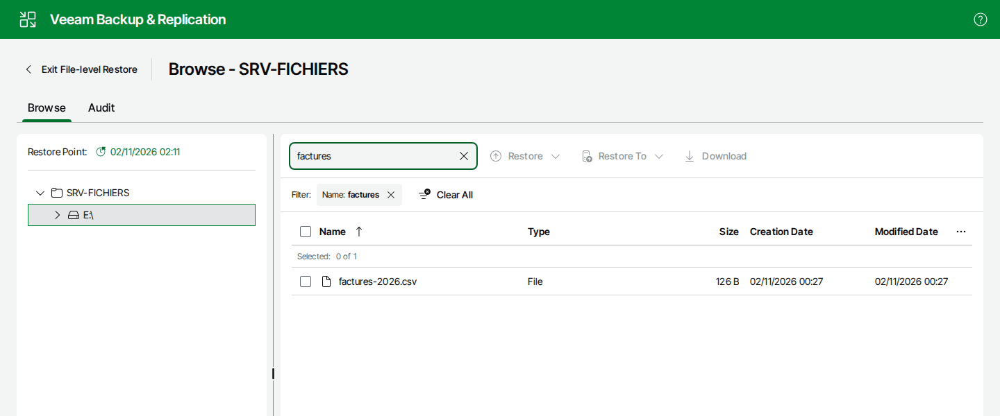
factures-2026.csv, avec sa taille et ses dates.5.4 Choisir comment restaurer : Overwrite, Keep ou Permissions only¶
- Cocher le fichier
factures-2026.csv. - Cliquer sur Restore : un menu propose trois choix.
| Choix | Effet |
|---|---|
| Overwrite | Remplace le fichier actuel par celui de la sauvegarde, à son emplacement d'origine |
| Keep | Conserve le fichier actuel et enregistre celui de la sauvegarde à côté, dans le même dossier. S'il existe déjà un fichier de même nom, la copie restaurée reçoit le suffixe _RESTORED_AAAAMMJJ_HHMMSS (date et heure de la restauration) |
| Permissions only | Ne restaure que les droits d'accès (NTFS) du fichier, pas son contenu ; le fichier doit exister |
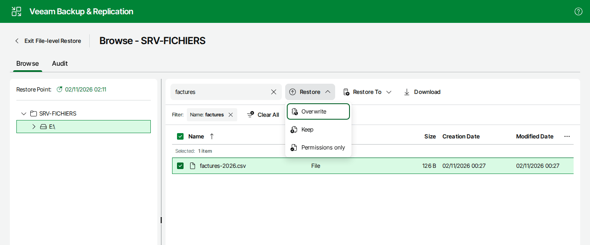
- Choisir Keep.
Pourquoi Keep ?
Keep est le choix prudent : il n'écrase jamais rien. Ici le fichier n'existe plus, donc il n'y a rien à conserver et la restauration le recrée sous son nom d'origine. Si un fichier du même nom avait existé (par exemple une version modifiée entre-temps), les deux auraient coexisté, et on aurait comparé avant de supprimer l'un des deux. Overwrite est plus rapide, mais irréversible : à réserver aux cas où l'on est sûr de vouloir revenir à l'ancienne version.
Une fenêtre Restoring files to 192.168.19.22 affiche la progression. Dans le lab, la restauration a duré 21 secondes et s'est terminée par Status: Success. Le journal indique Restored file "E:\Documents-importants\Comptabilite\factures-2026.csv", Restored files: 1, Restored data size: 126,0 B et Restore completed. Il indique aussi, sur l'appliance, le chemin d'un journal d'audit de la restauration (/var/lib/veeam/VeeamBackupLogFolder/Audit/…) : une trace de qui a restauré quoi et quand. Cliquer sur OK, puis quitter le navigateur de restauration avec Exit File-level Restore.
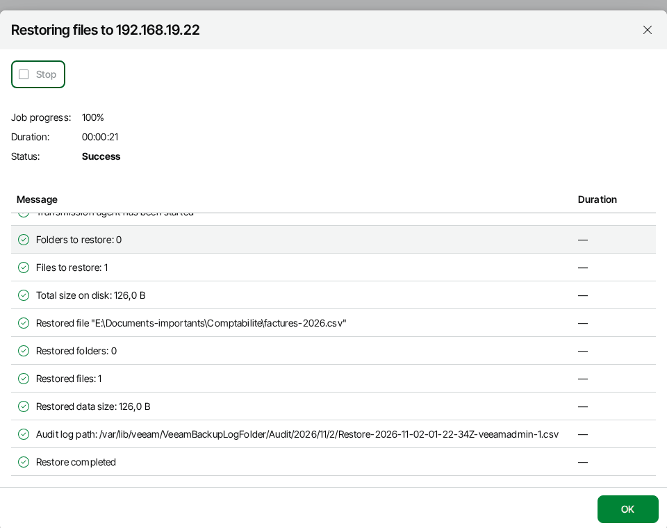
5.5 Vérifier que le fichier est identique¶
-
🪟 Dans PowerShell sur
srv-fichiers, contrôler que le fichier est revenu et recalculer son empreinte : -
Comparer avec l'empreinte relevée en 5.1. Dans le lab :
Name Length ---- ------ bilan-previsionnel.txt 52 factures-2026.csv 126 1646D545EF0DCCD77A0C88BEF952B13A24B941CE553B8DDADB0E29A6B49B18F8L'empreinte est identique à celle d'avant la suppression : le fichier restauré est, bit pour bit, celui de l'original. Le test est réussi.
Les empreintes sont différentes, ou le fichier n'est pas revenu
- Fichier absent : la restauration a peut-être écrit le fichier avec le suffixe
_RESTORED_…(si un fichier du même nom existait déjà) : lister le dossier complet. - Empreinte différente : vérifier qu'on compare le même fichier, et que le fichier n'a pas été modifié avant la sauvegarde (le job ne conserve que ce qu'il a lu à 22 h ou au lancement manuel). Ne pas considérer la sauvegarde comme fiable avant d'avoir compris l'écart.
- Le navigateur de restauration ne s'ouvre pas : voir l'encadré sur les fenêtres contextuelles en 5.2.
5.6 Pour aller plus loin¶
Exercice : restaurer avec Overwrite
- Modifier
E:\Documents-importants\Contrats\contrat-maintenance-2026.txt(ajouter une ligne dans le Bloc-notes). - Relancer Restore Guest Files sur le même point de restauration, retrouver ce fichier et choisir Restore > Overwrite.
- Vérifier que le contenu est revenu à la version sauvegardée. Que serait-il arrivé avec Keep ?
Exercice : restaurer vers un autre emplacement
Le navigateur de restauration propose aussi Restore To (restaurer vers une autre machine ou un autre dossier) et Download (télécharger les éléments choisis, dans une archive .zip, sur le poste où le navigateur web est ouvert). Selon la liste des limites de l'interface web dans la documentation de Veeam, la restauration de fichiers invités vers un autre emplacement se fait plutôt dans la console Windows (clic droit sur la machine dans Backups, Restore guest files > Microsoft Windows). Essayer d'y restaurer factures-2026.csv dans E:\Restauration-test, puis comparer l'empreinte.
6. Vérification de fin de partie¶
Cocher chaque point avant de passer à la partie suivante :
- Un fichier
.bcoexiste dansF:\RepoVeeam\VeeamConfigBackup\vbr\(section 2.6) ; - la console affiche une date à côté de Last successful backup, avec le chiffrement activé ;
- le groupe
GP-srv-fichiersest en état Installed pourSRV-FICHIERSet le serviceVeeamEndpointBackupSvcest Running ; - le job
Sauvegarde-Documents-importants-srv-fichiersest en Success, avec une prochaine exécution à 22:00 ; - dans Home > Backups, la machine
SRV-FICHIERSpossède un point de restauration ; -
factures-2026.csva été restauré et son empreinte SHA-256 est identique à celle d'origine.
🛟 Instantané : 03-fichiers-sauvegardes¶
Prendre l'instantané 03-fichiers-sauvegardes
- Éteindre proprement les machines du lab (
vbr,srv-fichiers,pfsense-19) ; - prendre l'instantané
03-fichiers-sauvegardessur toutes les machines (saufsrv-debiansi elle n'est pas encore installée) ; - rallumer : pfSense d'abord, puis
vbr, puissrv-fichiers.
Il permet de recommencer la partie 6 sans refaire celle-ci. Rappel : un instantané n'est pas une sauvegarde, il reste sur le même disque que la machine (voir Instantanés conseillés).
7. Questions de révision¶
- Que contient une sauvegarde de configuration, et que ne contient-elle pas ?
- Pourquoi ne faut-il pas la laisser sur le dépôt de l'appliance ?
- Quels sont les deux secrets qui protègent la sauvegarde de configuration d'une appliance, et qui les détient ?
- Pourquoi crée-t-on un groupe de protection plutôt que d'ajouter la machine directement au job ?
- Quelle différence entre Entire machine backup, Volume-level backup et File-level backup ?
- Pourquoi avoir choisi le dépôt de l'appliance pour sauvegarder les documents de
srv-fichiers? - Quelle est la différence entre Overwrite, Keep et Permissions only ?
- À quoi sert l'empreinte SHA-256 dans un test de restauration ?
Corrigé
- Les réglages de Veeam (jobs, dépôts, serveurs gérés, groupes de protection), l'historique et le catalogue des points de restauration, et, si elle est chiffrée, les identifiants, certificats et clés. Elle ne contient pas les données sauvegardées, qui restent dans les dépôts.
- Parce qu'elle disparaîtrait avec l'appliance si celle-ci était détruite, volée ou chiffrée par un rançongiciel, c'est-à-dire dans la situation même où on en a besoin. On la place sur une autre machine, idéalement aussi hors site.
- Le mot de passe de chiffrement (défini par l'administrateur Veeam dans la console) et la phrase secrète (définie par le Security Officer dans Host Management). Sans la phrase secrète, la tâche échoue avec « Unable to process the configuration backup without the Security Officer's passphrase ».
- Le groupe permet à l'appliance de déployer et mettre à jour l'agent, de réanalyser régulièrement les machines et de suivre automatiquement celles qu'on ajoute : le job désigne le groupe, pas chaque machine.
- Entire machine : image complète, pour reconstruire la machine. Volume-level : des volumes entiers choisis. File-level : seulement les fichiers et dossiers désignés, sans le système, adapté à un dossier précis.
- Pour que les données et leur copie soient sur deux machines différentes, et parce que ce dépôt est immuable (7 jours dans le lab), ce qui protège contre la suppression des sauvegardes.
- Overwrite remplace le fichier actuel par celui de la sauvegarde. Keep garde le fichier actuel et restaure l'ancien à côté (suffixe
_RESTORED_+ date et heure si un fichier de même nom existe). Permissions only ne restaure que les droits d'accès, pas le contenu. - À prouver que le fichier restauré est identique à l'original : si une seule différence existe, l'empreinte change. C'est un test objectif, plus fiable qu'un simple coup d'œil.
Ressources¶
- Création de sauvegardes de configuration chiffrées (documentation Veeam) — pourquoi chiffrer, rôle de la phrase secrète du Security Officer (en anglais).
- Lancer une sauvegarde de configuration manuellement (documentation Veeam) — menu Configuration Backup, Backup now (en anglais).
- Sauvegardes de configuration immuables (documentation Veeam) — conserver la configuration sur un dépôt immuable.
- Groupes de protection (documentation Veeam) — types de groupes et déploiement des agents.
- Créer un job de sauvegarde par agent pour Windows, console web (documentation Veeam) — les étapes de l'assistant.
- Restauration de fichiers invités (documentation Veeam) — montage, serveur de montage, Overwrite et Keep.
- Restaurer des fichiers invités dans l'interface web, étape Finalize Recovery (documentation Veeam) — Keep, Overwrite, Download et suffixe
RESTORED_. - Limites de l'interface web (documentation Veeam) — ce que l'interface web ne permet pas encore.
- Partie précédente : Ajouter des dépôts de sauvegarde · Partie suivante : Sauvegarder et restaurer un serveur Linux · Retour au sommaire du parcours.